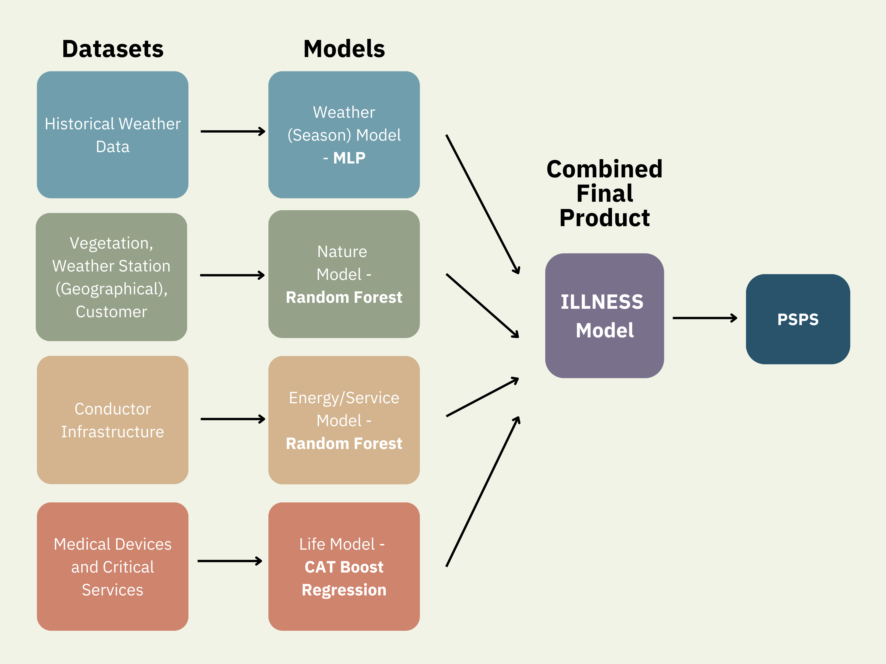

ILLNESS, An Alternative Way To Assess Wildfire Risk
UCSD Data Science Capstone Project
Group Members: Gloria Kao, Shentong Li, Neil Sharma
Introduction
Wildfires are a major environmental and safety issue in Southern California, and they are becoming
more common and threatening due to climate change and drought. One of the most common reasons of ignited wildfire is
faulty power lines, and utility companies like San Diego Gas & Electric (SDG&E) have been making efforts to
analyze the reasons. Through data anaylsis, utility companies can predict the risk of a wildfire happneing
and prevent it by turning off the power grid, and the event is called a power safety public shutoff (PSPS).
SDG&E's current data analysis include weather reports (wind speed), vegetation in the geographical area, and
the conduct span impact on serviced customers. Our project aims to further analyze possible reasons for a wildfire,
and create a more data-informed system that decides when a emergency shutoff is indeed needed, and when a PSPS
might impact people more negatively than positively.
Objective
To create a multi-factor machine learning model designed to enhance the accuracy of PSPS decisions.
We call it the
ILLNESS Model, which stands for
Insights on...
| Life |
Of people, paying attention to those who need medical devices and critical services |
| Living |
Situational, major social factors such as elections or concerts |
| Nature |
Vegetation around the area, particularly the dry plants and their fuel level |
| Energy |
Power grid data, such as the location and type of a conductor |
| Service |
Last time SDG&E serviced an area for maintenance |
| Season |
Environmental data such as wind gust and rainfall |
Methods
We coded a few different types of machine learning models in Python, with the help of data science packages like
Pandas, NumPy, and Scipy.
We have 4 models in total, which is 2 less of our proposed factors in ILLNESS because
some of the factors are similar enough to be combined into one model. Each model uses a different machine learning
algorithm that is best suited to their data type. For each model, a corresponding type of dataset is taken as input and
learns the mathematical parameters according to the algorithm. The learned model predicts the wildfire risk
using a test dataset and outputs the accuracy, which is the result that we collect.

Results
Our final, combined ILLNESS model has an accuracy of __%.
The individual models' accuarcies are as following:
[table?]

Predicted wildfire risk using our ILLNESS model
Below is an interactive heatmap that shows our predicted wildfire risk. A redder area indicates a higher risk.
The areas are divided into districts of San Diego County, making it easier for users to find their location.
When the mouse is hovered over an area, the tooltip shows the city name and ILLNESS score breakdown: energy, nature,
weather, and overall. The red-green color scale shows according to the overall score.
Predicted areas for PSPS using our ILLNESS model
Below is an interactive heatmap that shows PSPS risk, i.e. where a PSPS should occur or not.
A redder area means a higher PSPS risk, therefore should not be shut off. As you can see, the red areas are mostly
downtown, where the population is dense and that increases the life/living risk factor. If an area, like Ramona, is
green, that means the risk of wildfire outweighs the risk on the community, and a power shutoff is needed.
Discussion
This project could be for internal use, implemented by SDG&E. It can also be for public, as the ILLNESS model
provides a single numerical value that is easy to interpret. Similar to our geographical heatmap above, we could
make a dashboard website that updates the score live and provide transparency to people who uses energy from SDG&E
so they are aware of possible PSPS events, and perhaps even the reasons.
GitHub Page
Click
here
to visit our GitHub repository.
Click
here
to view our poster.
Click
here
to view our report.